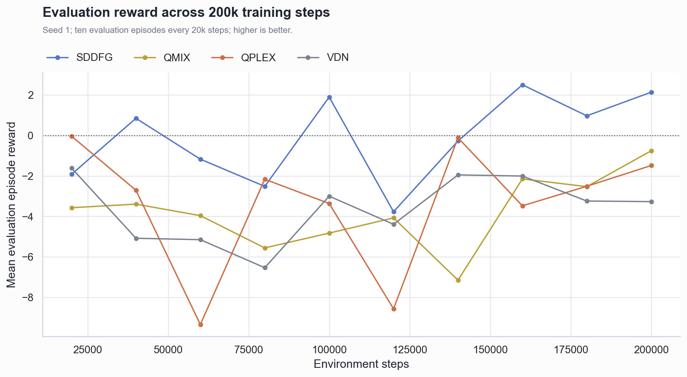
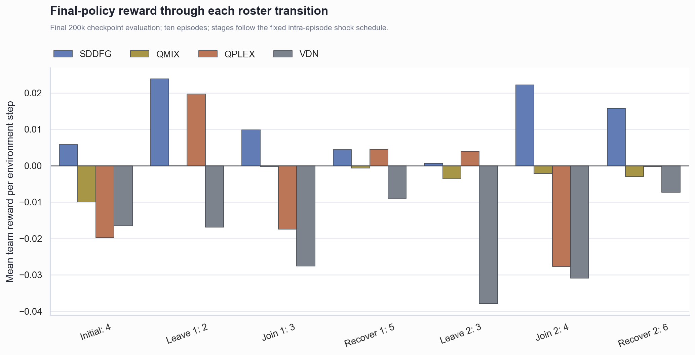

Wolfpack 动态智能体 200k 单种子对比
技术结论
- SDDFG 在最终奖励、最终胜率、最近三次评估奖励和全程平均奖励上均为四种算法最高。
- SDDFG 最终奖励为 2.135，胜率为 0.50； 最近三次奖励均值为 1.868。
- 最终策略在七个动态人数阶段的逐步平均奖励全部为非负，说明退出、加入和恢复机制没有再次触发系统性性能掉点。
- 当前没有日志或代码证据支持继续修改 SDDFG。结果仍是单 seed、每次仅十个评估回合，尚不能视为统计显著结论。
SDDFG 在后期形成稳定领先
奖励曲线显示 SDDFG 的最后三次评估全部为正，而三种值分解基线的最后三次均值仍为负。 这比单独比较 200k 最终点更能排除一次评估随机波动。

动态人数切换阶段不再系统性失分
SDDFG 在最终评估的七个阶段全部保持非负逐步奖励。VDN 七个阶段全部为负； QPLEX 仅部分阶段为正；QMIX 接近零但捕获胜率为零，属于低活动、低收益状态。

核心指标对比
| 算法 | 最终奖励 | 最终胜率 | 最近三次奖励 | 全程平均奖励 | 最佳奖励 | 正奖励评估 | 梯度裁剪比例 |
|---|---|---|---|---|---|---|---|
| SDDFG | 2.135 | 0.50 | 1.868 | -0.131 | 2.500 | 5/10 | N/A |
| QMIX | -0.759 | 0.00 | -1.812 | -3.796 | -0.759 | 0/10 | 100.0% |
| QPLEX | -1.487 | 0.10 | -2.491 | -3.376 | -0.036 | 0/10 | 6.2% |
| VDN | -3.269 | 0.40 | -2.838 | -3.622 | -1.610 | 0/10 | 0.0% |
配置与测量范围
四组实验均为 seed 1、200k environment steps、episode length 200、初始 4 人、 最大容量 6 人，并使用相同的 50/120 shock、退出 2 人、延迟加入 1 人和 30 步恢复设置。 评估每 20k 执行一次，每次十个回合。
比较使用保存的 progress、逐步人数/奖励轨迹、训练指标和控制台日志。 算法专属参数（动态图、QPLEX mixer 等）不要求相同。
稳定性与限制
- SDDFG 邻接 PPO 平均裁剪率约 0.49%，动态图训练处于稳定区间。
- QMIX 的预裁剪梯度均值约 906，全部更新都触发梯度裁剪，Q_tot 约 90–100； 因此 QMIX 结果存在明确数值稳定性问题，不宜作为唯一的优势证据。
- 最终十回合奖励方差仍较大。单 seed 和十回合评估不足以证明统计显著性， 只能支持“当前实现和该 seed 下描述性领先”。
推荐下一步
- 保持当前 SDDFG 代码不变，进行四种算法各自的 seed 1、2M 单种子验证。
- 完整实验将
num_eval_episodes提高到至少 30。 - QMIX 在进入正式结论前应单独诊断 mixer 状态输入和梯度爆炸问题。
- 单 seed 2M 排名符合预期后，再运行 seeds 1–5 并报告均值、标准差和置信区间。
生成来源：本地四组 200k 训练结果；生成脚本 scripts/analyze_wolfpack_dynamic_200k.py。